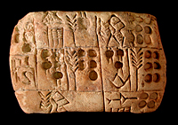

|
Mesopotamia Images
Images available
in jpeg format at 300dpi via email.
|
|
| 1.
Screen shot |
2.
Screen shot |
|
|
| 3.
Screen shot |
4.
Screen shot |
|
|
| 5.
Screen shot |
6. Stone panel
from the Palace of Ashurnasirpal II (883 - 859 BC) depicting the
king and an eagle-headed 'Apkallu', Nimrud, northern Iraq
|
|  |
|
| 7.
Clay tablet showing a record of barley (about 3100 BC), southern Iraq
|
8.
Leonard C. Woolley holding a plaster cast of an ancient harp, Ur,
1928 |
|
|
| 9.
Excavation of harps in situ, Ur, 1928 |
10.
Garnet cylinder seal and modern impression showing Ishtar, Neo-Assyrian,
720 - 700 BC |
| |
|
For more information
contact emu@thebritishmuseum.ac.uk
or telephone 020 7323 8839.
|
|